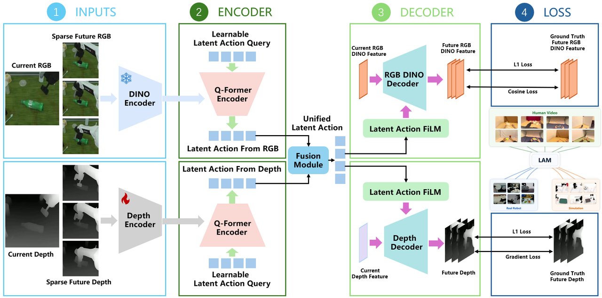
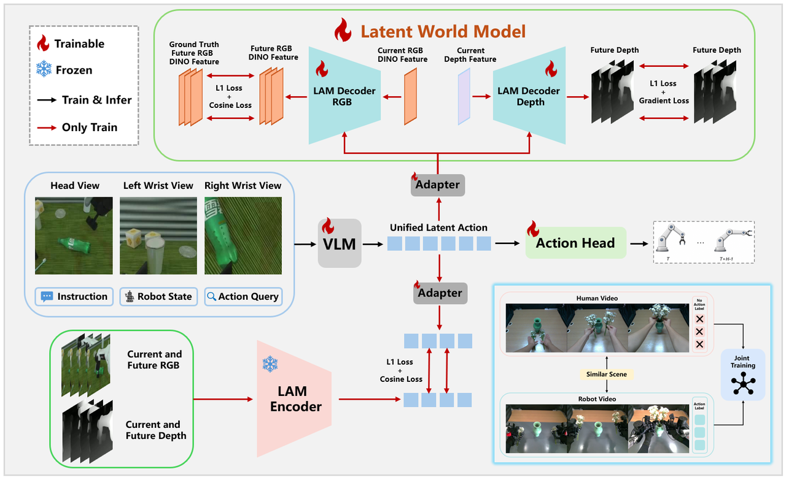
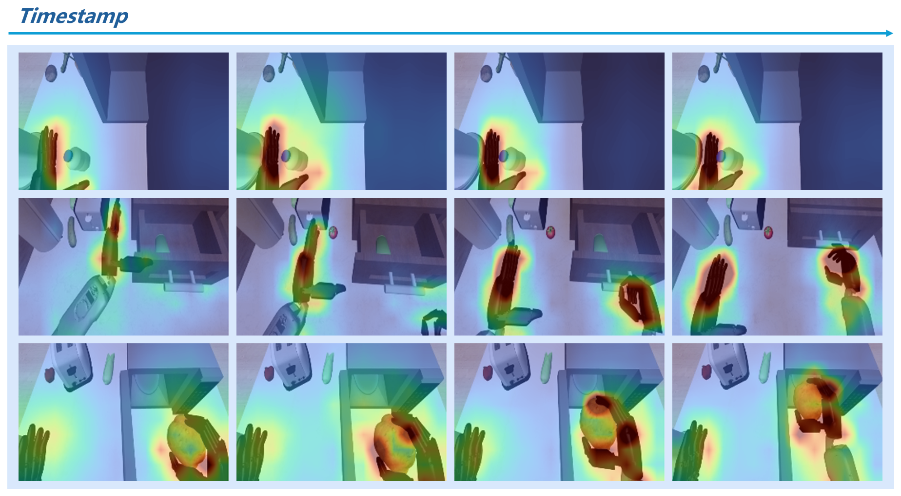

제출: 2026년 7월 13일 · 백본 Qwen3-VL-4B · 지도: DINOv3 + Depth · 추론 ~70ms (RTX 4090)
한 줄 요약 (TL;DR)
액션 라벨이 있는 로봇 데모와 액션-프리 영상을 동시에 활용해 실행 가능한(latent) action을 학습. 픽셀 복원 대신 DINOv3 semantic feature + 깊이로 미래를 예측(semantic-geometric LAM)해 외형 편향을 피하고, 로봇 action 예측·latent 정렬·미래 dynamics 예측을 공동 지도. RoboCasa-GR1-Tabletop 75.2% SOTA(+21pt vs base), RoboTwin 2.0 random 92.8%, 실기 4태스크에서 200 로봇 데모 + 400 인간 영상이 200 데모 단독(75.0)을 넘어 83.3%. 배포 시엔 인코더/월드모델 없이 VLM+action head만 필요(~70ms).
1배경 · 문제의식
범용 로봇 정책은 action-labeled 데모에 의존하지만 이는 비싸고 확장이 어렵다. 반면 인간 영상 같은 action-free 영상은 풍부하나 실행 가능한 액션이 없다. LAPA·GR00T·VLA-JEPA 등 최근 latent-action 접근은 (a) 픽셀 복원 손실이 외형에 편향, (b) 카메라 잡음 모션 증폭, (c) 정보 누출 등의 문제를 안고 있다. WALA는 DINOv3 의미 특징 + 깊이라는 semantic-geometric 목표로 이를 완화하고, 로봇 action 지도 + latent 정렬 + 미래 dynamics 예측을 하나의 목표에 통합한다.
2핵심 Contribution
Semantic-Geometric LAM — 픽셀 복원 대신 DINOv3 patch feature와 dense depth를 미래 예측 지도로 사용. 외형/조명/배경에 편향되지 않고 물체 정체·기하 변화를 학습.
Action-labeled + action-free 통합 학습 — 하나의 정책에 (i) 로봇 action loss, (ii) latent action target-matching, (iii) 미래 dynamics loss를 공동 부과. 인간 영상만으로도 dynamics·정렬 항이 살아있음.
SOTA + 데이터 효율 — RoboCasa 75.2%, RoboTwin 2.0 random 92.8%. 50 로봇 데모 + 400 인간 영상이 200 로봇 데모 단독과 유사(74.2 vs 75.0), 4× 데이터 효율. Unseen bread pick-and-place에서 인간 영상만으로 9/10 zero-shot.
3Method
백본 & LAM 구성
VLM 백본은 Qwen3-VL-4B. 학습 시 latent-action model(LAM)은:
Encoder: 프로즌 DINOv3(RGB patch semantic) + 프로즌 depth estimator(기하)로 관측을 두 스트림으로 인코딩, 두 스트림을 융합해 latent action 토큰을 생성.
Decoder (latent world model): 학습 가능. 미래 프레임의 DINOv3 feature와 dense depth를 예측 — 이 이중 예측이 정책 학습 중 world-model 지도가 됨.
EgoDex, RoboCOIN, RoboTwin 영상 (인간 egocentric grasping·manipulation 다수)
배포 필요
VLM + action head 만 (LAM encoder/decoder·DINOv3·depth 전부 학습 전용) → 추론 ~70ms/스텝 (RTX 4090)
4실험 결과
RoboCasa-GR1-Tabletop
Method
Avg SR (%)
Gain vs Base
Base policy
54.2
—
+ Semantic-Geometric World (LAM 미사용)
67.8
+13.6
+ LAM Pretrain + Semantic 예측
68.8
+14.6
+ Semantic-Geometric World Model
71.0
+16.8
+ LAM Target Only
67.6
+13.4
Full WALA
75.2
+21.0
24 태스크 평균, 태스크별 41–98% 범위. Full WALA가 새 SOTA.
RoboTwin 2.0
Clean: 90.6%
Random: 92.8% (비교군 중 최고)
실기 (Table IV) — 4 태스크
학습 데이터
4-task 평균 (%)
200 robot demos
75.0
200 robot + 400 human videos
83.3
50 robot + 400 human videos
74.2 (≈200 demo 단독)
50 로봇 데모에 400 인간 영상을 더하면 4× 로봇 데모 단독과 유사한 성능 — action-free 영상 활용의 실증.
Zero-shot 전이
미지의 bread pick-and-place 태스크에서 인간 영상만으로 학습한 latent가 9/10 trial 성공 — LAM이 학습한 latent 액션이 실제 로봇 실행으로 전달 가능함을 시사.
5Ablation (핵심 관찰)
Semantic vs Geometric: DINOv3 semantic 예측만도 +14.6pt, 여기에 depth 지도 추가 시 +16.8pt. 둘의 결합이 개별보다 우위 — 의미와 기하가 상호보완적.
LAM 사전학습 + world-model 결합: 사전학습만 하면 +14.6, 사전학습 + 정책 학습 중 world model 유지 시 +21.0 — 사전학습 표현을 그대로 동결하기보다 정책과 함께 dynamics 지도를 유지하는 편이 더 좋다.
Latent target only(정렬만) vs full: 67.6 → 75.2 (+7.6pt). action loss·align·world model의 3항 공동 지도가 필수.
Attention 시각화 (Fig. attention): RGB 인코더 주의가 손·조작 물체·접촉 영역에 집중 — 정적 배경보다 action-related 변화에 정렬.
6핵심 Figure / Table

Figure 1 — LAM 사전학습. 프로즌 DINOv3 + depth로부터 인코딩된 latent action이 semantic + geometric 미래 예측을 통해 학습됨. 픽셀 복원 없이 물체 정체·기하 변화만 예측하도록 강제. (출처: arXiv:2607.11397)

Figure 2 — 정책 학습. Qwen3-VL이 latent action과 로봇 action을 함께 예측, 프로즌 encoder가 target 제공, 트레이너블 decoder가 world model 지도 제공. 배포 시 encoder/decoder 제거. (출처: arXiv:2607.11397)

Figure 6 — Attention 시각화. RGB 인코더의 attention이 손·조작 물체·접촉 영역에 집중 — 정적 배경보다 action-relevant 변화에 정렬됨을 보이는 정성 증거. (출처: arXiv:2607.11397)
Table Ablation (RoboCasa 75.2). Base 54.2 → LAM+Semantic 예측 68.8 → +Depth 71.0 → Full WALA 75.2. semantic·geometric·LAM·world-model 4요소가 각각 유의미하게 기여함을 정량 확인.